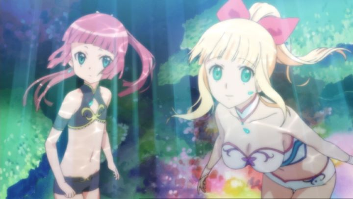

"Umi Monogatari," which can be translated as "Sea Story," is an anime that could be quickly described as... "Sailor Moon," but with mermaids. Yes, the analogy is simplified, but any description of the 2009 series (apparently, based on a pachinko game, of all things, before being adapted into a manga and anime) seems to fail in accurately portraying what the show is about. Near a rural Japanese island, mermaids (humanoid beings in bikinis) live in the ocean. A sister pair of mermaids discover a ring, presumably dropped by a "sky creature" above the water, and despite their fear, Marin and Urintravel up to attempt to return it. This ring wasn't lost, but thrown, by teenager Kanon, daughter to a local fake fortune-teller hack that sells rocks as being magical. Kanon's dark personality gives her an "evil aura," pushing others away from her, and the ring was a gift from her boyfriend, whom she had just broken up with. After finding each other, one thing leads to another, and a great evil is unleahsed from its slumber, and according to the wise old turtle Matsumoto (yes, a talking turtle), Kanon and Marin are the Priestesses of Sky and Sea, respectively, and must work together to save the world from this impending darkness. The setup should sound familiar: it's a "magical-girl" story, a popular anime genre for girls (and some boys) everywhere!I didn't watch "Umi Monogatari" until about a decade after its broadcast. By that point, the "magical-girl" genre had experienced a surge in popularity, almost entirely thanks to "Madoka Magica," which twisted a child-friendly tale into a dark one for adults (specifically, otaku-adults). Since then, many shows that followed also had a dark overtone. Being surrounded by such shows makes "Umi" feel refreshing, starting as a very light-hearted series. However, "Madoka Magica" was far from being the first to introduce darker themes to the genre, and "Umi," which predates it, proves that effectively, which we'll discuss in a moment."Umi Monogatari's" story is simplistic at first. A bit too much so, to the point where it's almost insulting to the audience. At first, there's no particular reason why Kanon and Marin are chosen to be the magical saviors (later, it's suggested that their lineage was part of it, but at the time, it appears entirely random, due to them being the first people the talking turtle with a moushtache sees). Without any training or explanation, both girls are able to transform and use magical abilities to wipe out foes, each in the form of fishes turned into evil humans by darkness in the air, searching for "evil" souls to sacrifice and quicken the revival of their dark lord. These things seem to just happen, without any rules or explanation. When magic and mermaids are involved, I understand throwing logic to the wind in favor of the drama and struggles between the characters, but I kept thinking I missed an important scene or two leading up to each fight. The characters, thankfully, are very likable. Kanon in particular: she's cynical, but relatable. As the show progresses, we learn her personality is a natural reaction to avoid conflict, to be the villain that her classmates can point to and assign difficult jobs to. This backfires in many ways, drowning her in self-confidence (we eventually learn SHE had broken up with her boyfriend, not him, even though that's not how she remembers it). Her interactions are hilarious for it, constantly having to either explain or accept her "evil aura." Marin, on the other hand, is "pure," naive and innocent, and full of love and trust for all things. Multiple times, she exclaims to "love" Kanon, which she pushes off, explaining she isn't gay (while promotional materials suggest otherwise, the relationship appears to be purely of just friendship, and Marin seems the type to quickly proclaim to "love" everything). Urin, her little sister, feels left out however, eager to return back to the sea with her sister, but not being a "priestess" with any magic, she is powerless to help. Clearly, there's enough opportunity for character development, no matter how silly the "monster-of-the-week" premise is at first. And yet, things change drastically by the second half of the series. Urin becomes the catalyst, slowly giving in to the darkness herself, becomes the ultimate enemy they must face. This turns the once episodic series into a single, cohesive epic, rendering the drama behind it with the darkness it deserves, but not distastefully as some more recent series have. By this point, the story seems to get better and better with every episode, even offering a clever explanation to what the darkness really was, beyond simplfying it was just "a never-ending war between darkness and light." Broadly, it's still predictable, and doesn't excuse the weak but entertaining writing of the first several episodes. But make no mistake, the story here is good, and is ultimately enough to justify watching the show. The production by Studio Zexcs is capable, impressive given that the studio isn't known for quality, and doesn't really have any property in their catalog worth mentioning. The designs of the "mermaid" people are distinct, but have little to do with mermaids, coming across as just humans underwater (the ending theme retells the classic story of "The Little Mermaid," but whatever the story's inspiration was, there's virtually no correlation with any stories of the mythical creatures). Worse, the show likes bare feet a lot... a boon for some viewers, but a gross distraction for me, however much sense it makes for characters that spend so much time under water. The backgrounds have a nice painterly style to them, but this could also be described as "unfinished." The design's strength is primarily in the more mundane character features, like angular, expressive faces, and cute chibi-designs during more comedic moments. The animation is a bit better than average too; it's expressive enough during normal scenes to remain engaging, rarely feeling like it cuts corners, and during more important scenes (action scenes in particular), it's impressively strong. Rightstuf (through Nozomi Entertainment) gives a reasonable home-video release, complete with a 13th episode (a heartfelt, if lacking peak at the characters a year later, notably with more inconsistent, but arguably better, animation than the main series) and a bunch of fun mini-sodes. There is no English dub, but the Japanese dub fits the characters, and is as emotional as it needs to be in the climax. The only problems I had were with Marin (who sounded as bubbly as you'd fear), and with the ex-boyfriend Kojima (who sounded WAY too feminine to convincingly be a teenage boy). It's easy to disregard "Umi Monogatari" as just some other medicore anime, perhaps aimed at female audiences. In many ways, it is, but it also elevates itself to be much more than that with decent production values and a story that significantly improves by the end of its 13-episode run, and for being funny enough at the beginning to keep your attention. It's a great hidden gem for any audience.
- "Ani" More reviews can be found at : https://2danicritic.github.io/ Previous review: review_Typhoon_Noruda Next review: review_Unbreakable_Machine_Doll